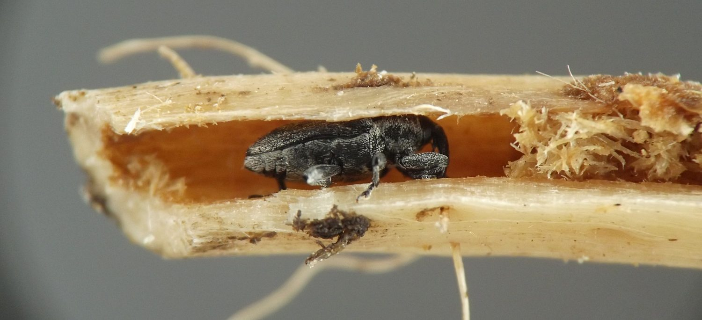
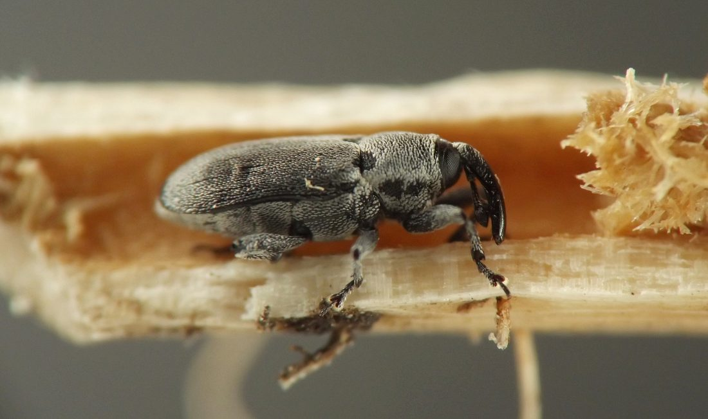
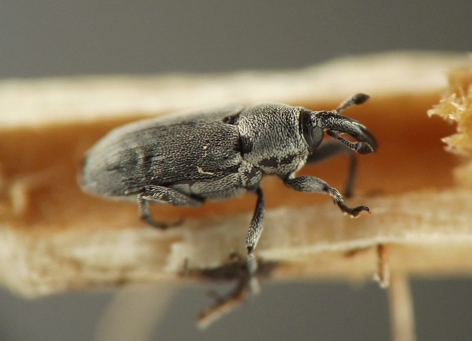
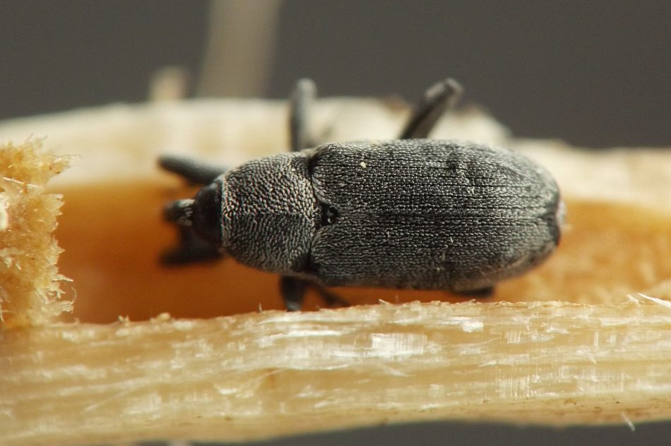
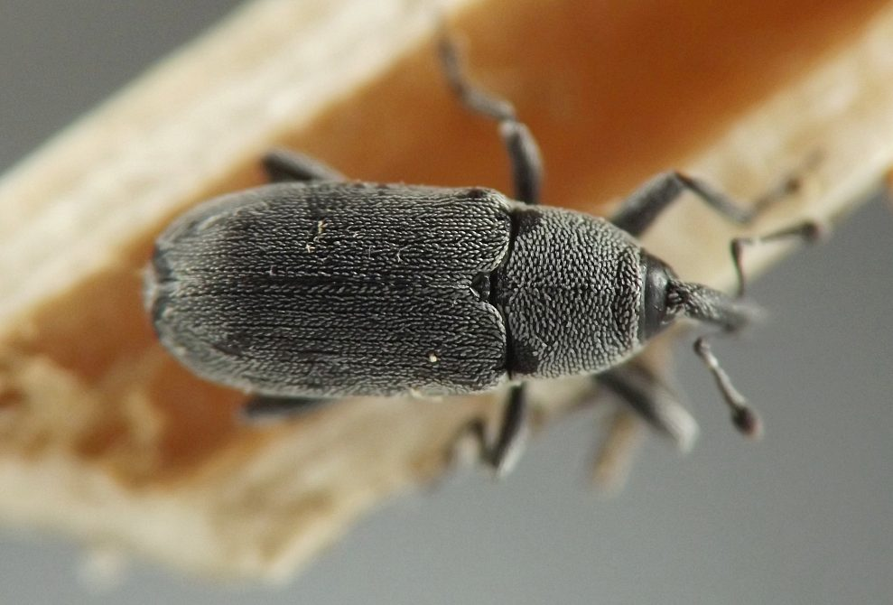
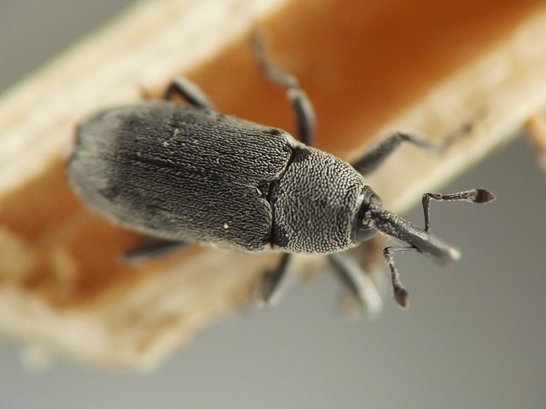
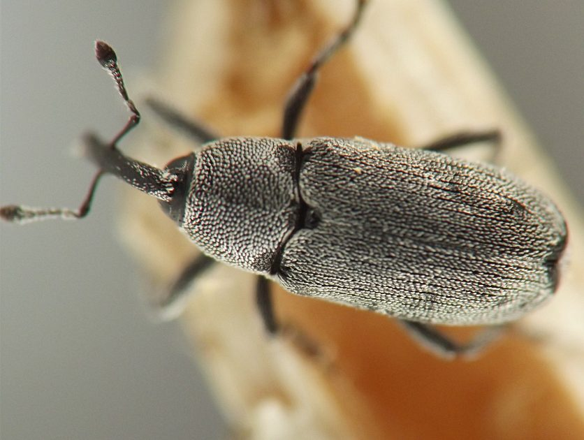
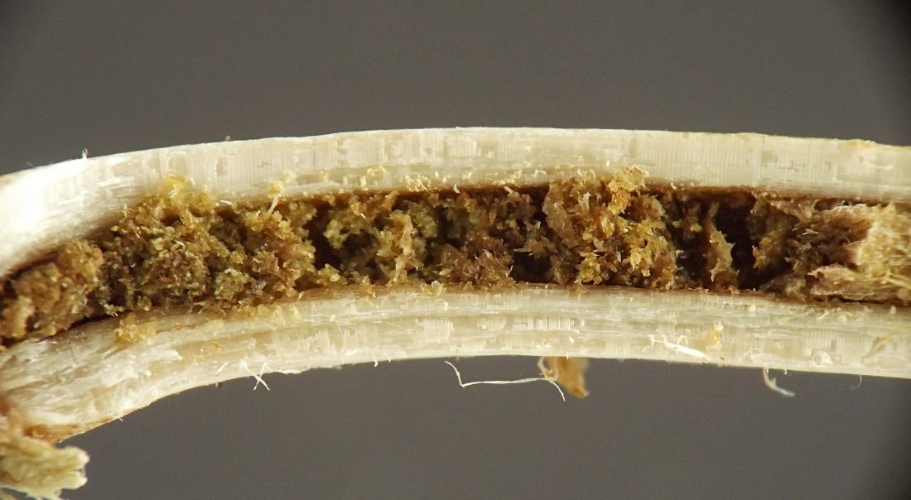
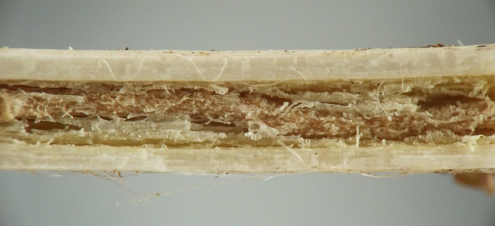

Stem borer (Coleoptera: Curculionidae) in Solanum
| Record no.: | 0512 |
|---|---|
| Feeding guild: | Stem borer |
| Taxonomy: | Coleoptera: Curculionidae: Trichobaris cf. trinotata |
| Stages observed: | trace, larva, adult |
| Distribution observed: | IA |
| Hosts in Solanum: | S. carolinense (horse nettle) |
I found two adult weevils overwintering in dead stems of the host in late March, 2022. Each was positioned in a pupation chamber at the end of its larval tunnel, right at ground level or just below. At this height the stem pith had been completely hollowed out and replaced with brown, angular frass, while higher up the larval tunnel occupied only a portion of the inner diameter of the stem, and the light brown frass inside the tunnel contrasted with the pale yellowish-white color of the intact pith.
I also observed one or more larvae in their stem tunnels once, but did not photograph them or record additional details.

 Prev
Prev
{kind=link}
{kind=link}

{kind=link}

{kind=link}

{kind=link}

{kind=link}

{kind=link}

{kind=link}

{kind=link}

Page created: July 26, 2026. Last update: July 26, 2026